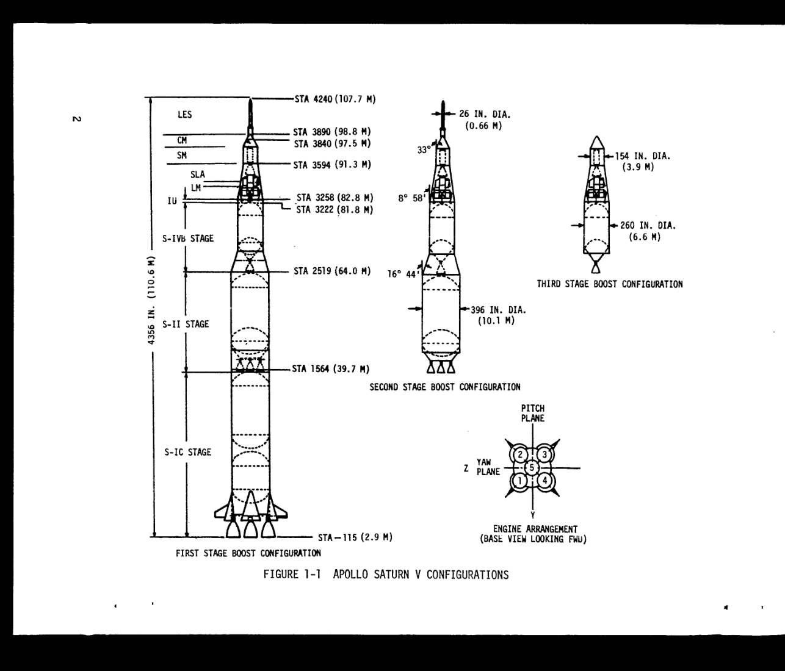
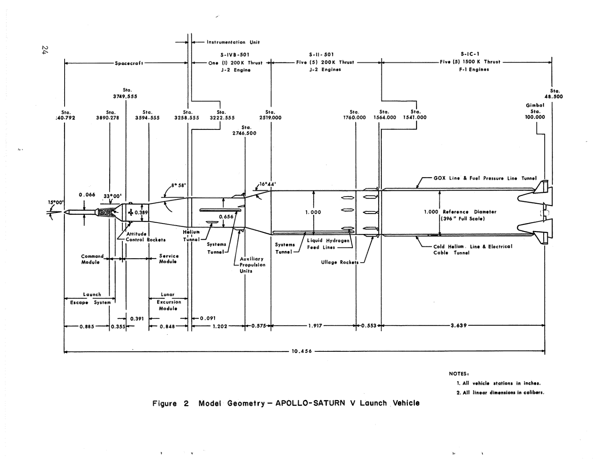
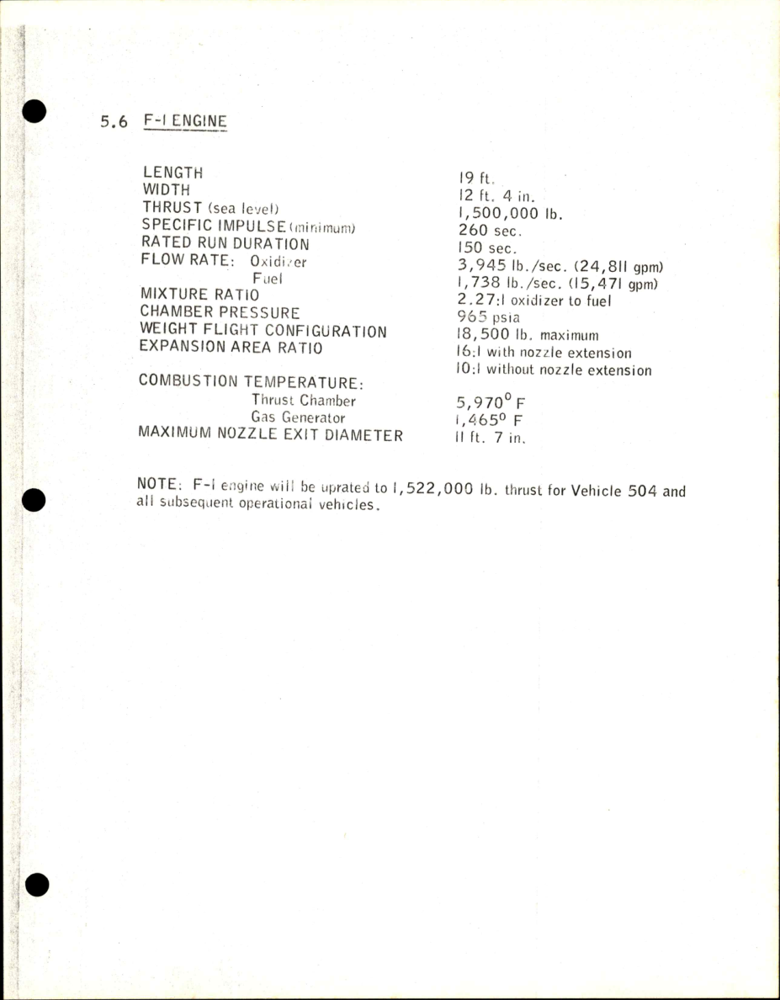
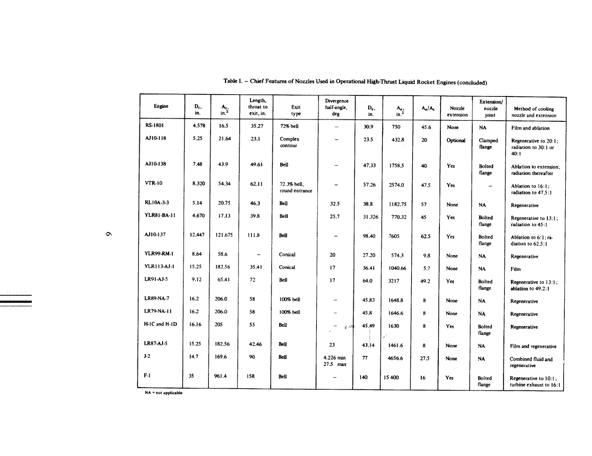

GLB（三维模型文件）重新导入后测量。通过仅表示模型实现了列出的参考值。
SA-506（土星五号506号） · 1969年发射构型
外形的每个结论，
都应能回到证据。
这一版用绝对站位修正核心接口，并检查实际导出的模型。完整图纸一致性仍未通过：发动机安装、逃逸塔接点和登月舱收拢构型存在证据缺口。
F‑1任务适用尺寸、逃逸塔接点、LM‑5收拢间隙、独立照片的多视图注册。
软件容差与原资料精度分别记录，不把数值检查当成实物制造精度。
01 / 坐标基准
先把“从哪里量”说清楚。
图纸中的 STA（站位）以英寸表示。网页模型使用米，底部名义喷口平面对应站位 −115，而不是站位0。
z = (STA + 115) × 0.0254模型高度（米） = 站位加115后换算为米
站位1541是S‑II结构参考下端；首次分离面1564在它上方23英寸。级间段、发动机和箭体的长度会重叠，不能把标称长度逐段相加后称为完整装配尺寸。二、三级之间的锥形级间段在分离后留在第二级上（SA‑506印刷5-25页），不属于第三级主体。
上部3222.555和3258.555引用SA‑501气动图作暂用参考；小数位数不代表SA‑506实物具有相同精度。
02 / 冲突与决定
资料不一致的地方，保留分歧。
03 / 可复核的原始来源
任务、版本、页码与适用范围。
原始扫描与建模判断分开保存。下列“原页”保留原始内容，中文说明在网页中另列。
引用的原始参考图




04 / 导出后的独立检查
测量交付文件，不只检查脚本参数。
新进程重新读取GLB（三维模型文件），使用从文献另行抄录的参考值测量。下表的4毫米容差用于发现软件实现错误；原图多为标称尺寸，未证明实物误差在4毫米以内。
| 核对项 | 模型 / 米 | 参考 / 米 | 实现偏差 / 毫米 | 检查结果 |
|---|
查看同一坐标与相机尺度下的四向几何图
这些是模型自身的正交视图，用于检查结构和导出。没有将它们冒称为与四张历史照片匹配。
05 / 哪些还不能确认
完成检查，不等于完成历史重建。
图示推定
尚缺验证
预留的任务实拍为NASA编号S69‑38660。它可用来核对大体外形与涂装；因遮挡、透视和镜头参数未标定，本轮只作定性对照，未计算“准确率”。查看NASA照片目录 ↗
核验记录未能载入。请刷新，或打开原始核验记录。